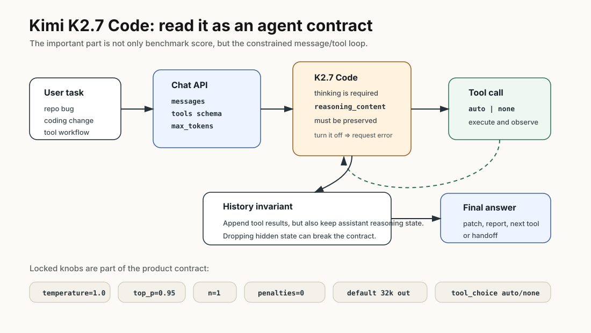
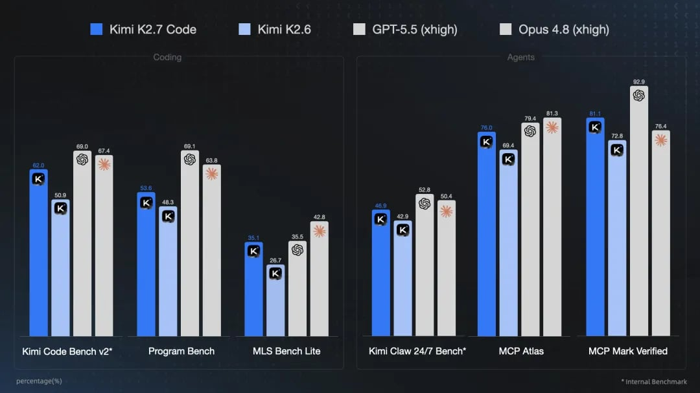
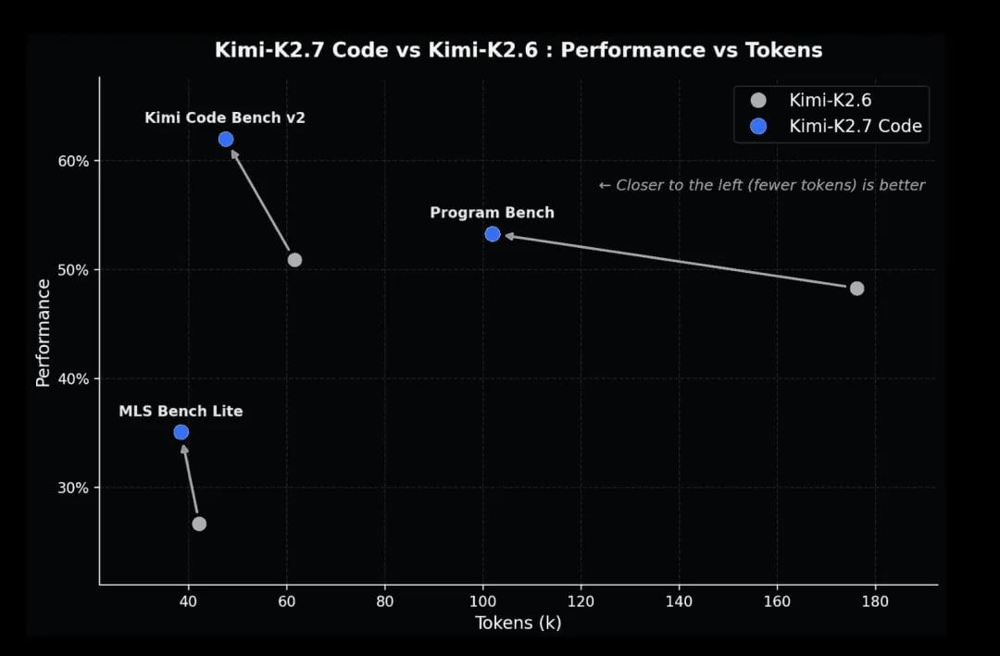

Kimi K2.7 Code：把 coding 模型读成 agent contract
- Source: Kimi K2.7 Code 官方文档
- Background: Kimi K2.6 Tech Blog
- 类型: 模型发布文档 / API 行为说明 / coding-agent benchmark report
- 关键词: coding model, thinking mode, tool use, MCP, long-horizon coding, token efficiency
读法：给人和 agent 的路标
这篇要按 agent contract 读，不要按传统模型报告读。快速路线是：先看 K2.7 Code 对 thinking、tool_choice、message history、采样参数的约束；再看 K2.7 相比 K2.6 的分数和 token 曲线；最后用 K2.6 blog 的 footnote 判断这些数字是在什么 harness 下来的。
给 agent 以后检索时，关键词是：thinking must stay enabled、reasoning_content、tool_choice auto/none、temperature locked、top_p locked、MCP Atlas、MCP Mark Verified、token efficiency。这篇最适合记录“接入 Kimi coding model 时不能踩哪些 API 坑”。
一句话判断
Kimi K2.7 Code 不是一篇传统 paper，更像一份“模型能力 + API 行为 + agent 使用约束”的技术说明；真正需要记住的是：它把 K2.6 的 coding/agent 能力继续往专用代码模型推进，同时把很多 decoding 和 tool-use 参数固定下来，减少用户随手调参造成的 agent 行为漂移。
图表优先读法
| 先看 | 图/表/接口 | 读完应该抓住什么 |
|---|---|---|
| 1 | agent contract 图 | Kimi 的重点是固定 agent 协议和参数，减少使用方随意调参 |
| 2 | K2.7 / K2.6 数据图 | release note 数字要分清新模型数据和背景模型数据 |
| 3 | API / tool-use pipeline | 对 coding agent 来说，reasoning_content、tool schema、temperature/top_p 约束很关键 |
| 4 | 具体 task | 这类官方文档最有用的是如何正确调用，而不是只看 benchmark |
先抓住四个点
- K2.7 Code 是 Kimi 当前面向 coding 的最新专用模型。 官方文档标题就是 Kimi K2.7 Code，图中也直接把它和 K2.6、GPT-5.5、Opus 4.8 做 coding/agent 对比。
- 它不是“纯文本补全模型”的用法。 文档要求 thinking 默认开启，
kimi-k2.7-code关闭 thinking 会报错；多步工具调用还必须保留 assistant message 里的reasoning_content。 - 很多采样参数被锁死。
temperature=1.0、top_p=0.95、n=1、presence/frequency penalty 为0.0，指定其他值会报错。这说明官方更希望用户把它当稳定 agent runtime，而不是普通可随意调采样的 chat model。 - K2.7 的公开材料比 K2.6 更像产品化 release。 K2.6 blog 给了大量 benchmark 和 footnote；K2.7 文档给的是 API 约束、agent 接入、benchmark 图和 token/performance 图，所以这篇笔记会把 K2.6 当背景，不把它混写成同一份 paper。
先看我整理的结构图

K2.7 Code 最值得先理解的不是某个单榜分数，而是它把模型暴露成一个更严格的 coding-agent contract：thinking 不能关，工具调用只能在固定选项里走，多轮 tool loop 还要求保留 reasoning_content。这会直接影响你怎么接 agent 框架。
图里有三个锚点：
- thinking 是契约，不是开关：
kimi-k2.7-code关闭 thinking 会报错，说明它不是普通 chat completion 模型。 - message history 必须完整：多轮工具调用要保留 assistant message 的
reasoning_content，否则 agent loop 可能直接不兼容。 - 采样参数被收束：temperature、top_p、n、penalty 都基本锁死，官方更希望用户把稳定性放在模型默认行为里。
官方图 / 数据作为证据

这张图值得先看，因为它把 K2.7 Code 放在两个维度里：左边是 coding benchmark，右边是 agent/MCP benchmark。它不是完整评测协议，但可以看出官方想强调的能力方向不是聊天，而是代码任务和工具任务。
这张图要分开读：左边说明 K2.7 Code 相比 K2.6 在代码任务上整体前进，右边说明它也在工具/MCP 环境里前进。它不能单独证明“全面超过某个 frontier model”，但能说明 Kimi 这条线的优化目标越来越 agentic。

第二张图更重要：K2.7 Code 相比 K2.6 在几个 coding benchmark 上不只是分数上升，横轴 token 也向左移动。也就是说官方 claim 不是单纯“更强”，而是“更少 token 做出更高性能”。
这张图对产品接入很关键：coding agent 不是只看 pass rate，还要看 token、延迟和工具轮数。一个模型如果多花一倍 token 才多拿一点分，产品体验可能并不划算；K2.7 图里想表达的是更靠近 Pareto frontier。
K2.7 Code 的关键数据
下面的表是从官方 K2.7 Code 图里读出的数值。带星号的 benchmark 是官方图中标注的内部 benchmark。
| Benchmark | Kimi K2.7 Code | Kimi K2.6 | GPT-5.5 xhigh | Opus 4.8 xhigh |
|---|---|---|---|---|
| Kimi Code Bench v2* | 62.0 | 50.9 | 68.0 | 67.4 |
| Program Bench | 58.6 | 48.3 | 69.1 | 63.8 |
| MLS Bench Lite | 35.1 | 26.7 | 35.5 | 42.8 |
| Kimi Claw 24/7 Bench* | 46.9 | 42.9 | 52.8 | 50.4 |
| MCP Atlas | 76.0 | 69.4 | 79.4 | 81.3 |
| MCP Mark Verified | 81.1 | 72.8 | 92.9 | 76.4 |
读法：
- K2.7 Code 相比 K2.6 在这六项上都涨了，尤其是 Kimi Code Bench v2、Program Bench、MLS Bench Lite。
- 和闭源 frontier 比，它不是所有项领先。Program Bench 和 MCP Mark Verified 仍能看到明显差距。
- MCP Mark Verified 上 K2.7 Code 超过 Opus 4.8 xhigh，但仍明显低于 GPT-5.5 xhigh。这个点要谨慎读，因为不同模型/工具栈/评测 harness 的可比性需要看完整协议。
K2.6 背景数据为什么还值得放
K2.7 文档公开的细节偏 API 和图，K2.6 blog 则给了更完整的公开 benchmark 与 footnote。它能帮我们理解 K2.7 是从什么能力底座上继续走的。
| Benchmark | Kimi K2.6 | GPT-5.4 xhigh | Claude Opus 4.6 max | Gemini 3.1 Pro high | Kimi K2.5 |
|---|---|---|---|---|---|
| Terminal-Bench 2.0 | 66.7 | 65.4* | 65.4 | 68.5 | 50.8 |
| SWE-Bench Pro | 58.6 | 57.7 | 53.4 | 54.2 | 50.7 |
| SWE-Bench Multilingual | 76.7 | - | 77.8 | 76.9* | 73.0 |
| SWE-Bench Verified | 80.2 | - | 80.8 | 80.6 | 76.8 |
| OSWorld-Verified | 73.1 | 75.0 | 72.7 | - | 63.3 |
| LiveCodeBench v6 | 89.6 | - | 88.8 | 91.7 | 85.0 |
K2.6 blog 的 footnote 也很关键：
- K2.6 / K2.5 的结果是在 thinking mode enabled 下测的。
- K2.6 实验默认
temperature=1.0、top_p=1.0、context length 262,144 tokens。 - coding tasks 是 10 次独立运行平均。
- SWE-Bench 系列使用从 SWE-agent 改造的 in-house framework，工具包括 bash、createfile、insert、view、strreplace、submit。
- Terminal-Bench 2.0 使用默认 Terminus-2 agent framework，并保留 thinking mode。
这些说明让 K2.6/K2.7 的数字更像 agent-system score，而不是裸模型一次性回答能力。
API / Tool Use Pipeline
K2.7 Code 的使用方式可以理解成下面这个 contract：
- 用户把任务、历史消息、工具 schema 交给 Chat Completions API。
- 模型默认进入 thinking mode，生成可保留的
reasoning_content。 - 如果需要工具，模型只能在
tool_choice=auto或none的约束下选择工具。 - 工具执行结果返回后，调用方必须把本轮 assistant message 里的
reasoning_content一起保留进上下文。 - 多轮工具调用结束后，模型生成 final answer 或下一步 tool call。
这里最容易踩坑的是第 4 点。很多 agent 框架会只保存 assistant 的 visible content 和 tool calls，而丢掉 reasoning trace；Kimi 文档明确说这样会报错。也就是说，K2.7 Code 对 message history 的要求比普通 OpenAI-compatible chat API 更严格。
这也是我最想保留在笔记里的工程点：OpenAI-compatible API 不等于行为完全兼容。 字段名相似，但对 reasoning trace、tool loop 和参数的要求可能完全不同。接入之前要先看 contract，不要把它当随便替换 base URL 的模型。
参数约束
| 字段 | K2.7 Code 行为 | 工程含义 |
|---|---|---|
max_tokens |
默认 32k，即 32768 | 长输出默认可用，但仍要自己管预算 |
thinking |
默认 enabled，关闭会报错 | 它被设计成 thinking model，不是可选增强 |
temperature |
固定 1.0 | 不鼓励用户调温度做行为控制 |
top_p |
K2.7/K2.6/K2.5 固定 0.95 | 把采样策略收束成模型侧默认 |
n |
固定 1 | 不支持单请求多候选 |
presence_penalty / frequency_penalty |
固定 0.0 | 不建议用传统 chat 调参方式影响输出 |
tool_choice |
仅支持 auto / none |
agent orchestration 交给模型和框架协同 |
具体 task 怎么理解
从官方图和 K2.6 blog 看，Kimi 这条线的 task 可以分成三类。
| Task 类别 | 典型任务 | 评测点 |
|---|---|---|
| Coding benchmark | Kimi Code Bench v2、Program Bench、MLS Bench Lite、LiveCodeBench | 写代码、修 bug、算法/工程题、可能包含多语言或多文件 |
| SWE agent | SWE-Bench Verified / Pro / Multilingual、Terminal-Bench | 读仓库、改文件、跑命令、提交 patch |
| Tool / MCP agent | MCP Atlas、MCP Mark Verified、Kimi Claw 24/7 Bench | 工具选择、MCP server 使用、长链路操作、状态保持 |
和“纯语言模型”的区别在于，很多 task 的成功条件并不只在文本里。它需要模型：
- 知道什么时候调用工具；
- 能保留中间推理和工具观察；
- 能从工具结果里修正计划；
- 能在 token budget 内完成足够多轮交互。
这也解释了为什么用户只看 screenshot/GUI 的任务时，纯文本模型会卡住。K2.7 Code 本身还是文本/工具接口模型，但它的评测目标已经明显偏 agentic workflow。
换句话说，K2.7 Code 的“code”不是代码补全意义上的 code，而是 coding agent runtime 里的 code：它要在工具观察、历史 reasoning、仓库文件和任务约束之间保持状态。这个区别比单个 benchmark 小数点更重要。
我怎么看
可信之处：
- K2.7 图里直接展示了 K2.6 到 K2.7 的提升，而且包含 performance vs tokens，说明官方关心的不只是最高分。
- API 约束写得很具体，尤其是 reasoning content 保留、参数锁定、tool_choice 限制，这些对真实 agent 接入非常有用。
- K2.6 blog 的 footnote 给了评测设置，能帮助判断数字到底来自什么 harness。
需要警惕：
- K2.7 文档不是完整 technical report，训练数据、后训练 pipeline、benchmark 采样/置信区间等信息不完整。
- Kimi Code Bench v2、Kimi Claw 24/7 Bench 是内部 benchmark，外部复查难度高。
- 与 GPT/Opus 的对比很可能依赖特定 harness、工具集和 reasoning effort，不能直接等同于“模型本体更强”。
对我的价值
如果要把 Kimi K2.7 Code 接到个人 coding agent 或 wiki/paper pipeline，我会先借鉴三点：
- 不要乱调采样参数。 尊重官方默认，把稳定性放在第一位。
- message history 要完整保存。 特别是多步工具调用里的
reasoning_content，这可能是兼容 K2.7 的关键。 - 评测要按 agent workflow 做。 只测单轮 answer 很容易低估或误判；应该测读仓库、改文件、跑命令、处理失败、最后交付的完整闭环。
对我自己的 paper-reading pipeline，K2.7 Code 提醒我：不同模型需要不同 adapter。比如有的模型要求保留 reasoning trace，有的模型对 tool schema 更挑，有的模型不能改采样参数。个人 wiki 的 agent harness 应该把这些模型契约写成配置，而不是散落在 prompt 里。
一句话收束
Kimi K2.7 Code 最值得记住的不是“又一个更强 coding 模型”，而是它把 coding model 的使用边界往 agent runtime 推了一步：更强的代码/工具能力，配套更严格的上下文和参数约束。